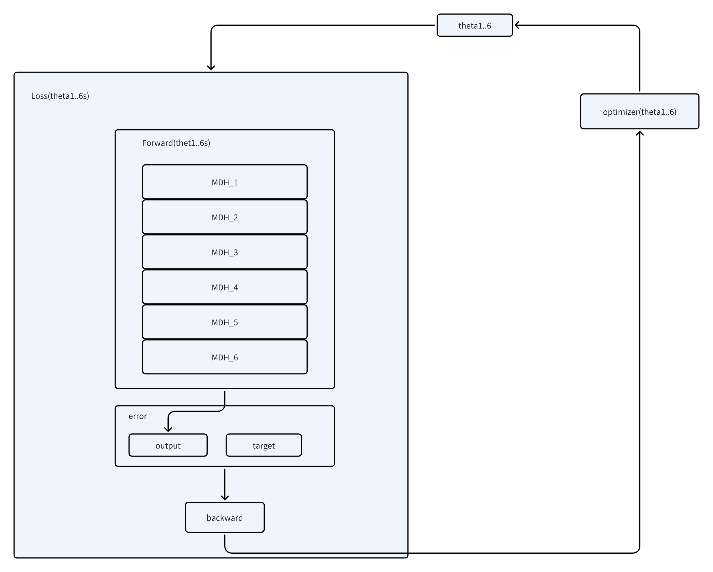

机械臂笔记（三）—— 通过PyTorch 梯度下降进行逆运动学计算
本文尚不成熟，属于学习中的偶尔尝试，效果尚可。暂时不会整理。
结合下图理解代码可能更好理解一些。

代码部分：
import torch
import math
# -----------------------------
# 参数与设备
# -----------------------------
dtype = torch.float64
device = "cpu"
# PUMA 560 改进 DH 参数（米）
a2 = 0.431
a3 = 0.020
d3 = 0.149
d4 = 0.433
# -----------------------------
# 改进 DH 单步变换（构建每一步变换的矩阵，需要手工给定参数）
# -----------------------------
def mdh_torch(a, alpha, d, theta):
# 保证所有输入都是 tensor
if not isinstance(a, torch.Tensor):
a = torch.tensor(a, dtype=dtype, device=theta.device)
if not isinstance(alpha, torch.Tensor):
alpha = torch.tensor(alpha, dtype=dtype, device=theta.device)
if not isinstance(d, torch.Tensor):
d = torch.tensor(d, dtype=dtype, device=theta.device)
ca = torch.cos(alpha)
sa = torch.sin(alpha)
ct = torch.cos(theta)
st = torch.sin(theta)
T = torch.zeros((4, 4), dtype=dtype, device=device)
T[0, 0] = ct
T[0, 1] = -st
T[0, 2] = 0.0
T[0, 3] = a
T[1, 0] = st * ca
T[1, 1] = ct * ca
T[1, 2] = -sa
T[1, 3] = -d * sa
T[2, 0] = st * sa
T[2, 1] = ct * sa
T[2, 2] = ca
T[2, 3] = d * ca
T[3, 3] = 1.0
return T
# -----------------------------
# 正运动学 FK
# -----------------------------
def fk_torch(theta):
T = torch.eye(4, dtype=dtype, device=device)
# i = 1
T = T @ mdh_torch(0.0, 0.0, 0.0, theta[0])
# i = 2
T = T @ mdh_torch(0.0, -math.pi/2, 0.0, theta[1])
# i = 3
T = T @ mdh_torch(a2, 0.0, d3, theta[2])
# i = 4
T = T @ mdh_torch(a3, -math.pi/2, d4, theta[3])
# i = 5
T = T @ mdh_torch(0.0, math.pi/2, 0.0, theta[4])
# i = 6
T = T @ mdh_torch(0.0, -math.pi/2, 0.0, theta[5])
return T
# -----------------------------
# 目标位姿
# -----------------------------
T_target = torch.tensor([
[ 0.966, 0.257, 0.022, 0.069],
[-0.069, 0.174, 0.982, 0.626],
[ 0.249, -0.951, 0.186, 0.587],
[ 0.000, 0.000, 0.000, 1.000],
], dtype=dtype, device=device)
# -----------------------------
# 损失函数
# -----------------------------
def loss_function(theta):
T = fk_torch(theta)
# 位置误差
loss = (T[0,3] - T_target[0,3])**2
loss += (T[1,3] - T_target[1,3])**2
loss += (T[2,3] - T_target[2,3])**2
# 姿态误差（选择矩阵元素）
loss += (T[0,2] - T_target[0,2])**2
loss += (T[1,2] - T_target[1,2])**2
loss += (T[2,2] - T_target[2,2])**2
loss += (T[0,1] - T_target[0,1])**2
loss += (T[1,1] - T_target[1,1])**2
loss += (T[2,1] - T_target[2,1])**2
loss += (T[0,0] - T_target[0,0])**2
loss += (T[1,0] - T_target[1,0])**2
loss += (T[2,0] - T_target[2,0])**2
return loss
# -----------------------------
# 可训练的关节角
# -----------------------------
theta = torch.nn.Parameter(torch.zeros(6, dtype=dtype, device=device))
# -----------------------------
# 优化器与训练循环
# -----------------------------
optimizer = torch.optim.Adam([theta], lr=0.01)
max_epoch = 5000
max_error = 1e-6
for epoch in range(max_epoch):
optimizer.zero_grad()
loss = loss_function(theta)
loss.backward()
optimizer.step()
# 角度周期归一化 [-pi, pi]
with torch.no_grad():
theta[:] = (theta + math.pi) % (2*math.pi) - math.pi
if epoch % 100 == 0:
print(f"Epoch {epoch}, Loss {loss.item()}")
if loss.item() < max_error:
print(f"收敛成功! Epoch {epoch}, Loss {loss.item()}")
break
# -----------------------------
# 输出最终关节角
# -----------------------------
print("求解得到关节角（rad）:")
print(theta.detach().cpu().numpy())
# -----------------------------
# 验证 FK 是否匹配目标
# -----------------------------
T_check = fk_torch(theta).detach().cpu().numpy()
print("末端位姿 FK 验证:")
print(T_check)试验结果
- 在2400 次之后，误差能收敛到
1e-6以内，但是再想进一步收敛就非常困难了，工业上应该够用，但是计算时间太长了
- 计算值
- 给定值
- 误差
缺点
- 暂时无法限定取值范围，即关节转动角度可能会超过限制，需要再加一层：
raw = torch.nn.Parameter(torch.zeros(6))
theta_min = torch.tensor([
-160, -225, -225, -110, -100, -266
]) * torch.pi / 180
theta_max = torch.tensor([
160, 45, 45, 170, 100, 266
]) * torch.pi / 180
def get_theta(raw):
return theta_min + (theta_max - theta_min) * torch.sigmoid(raw)
###
optimizer = torch.optim.Adam([raw], lr=lr)
theta = get_theta(raw)
loss = loss_fn(theta)
loss.backward()
optimizer.step()优点
连续运动计算比较快，因为初始值和目标值接近：
init_theta = torch.tensor(
[1.2, -1, -1, 1, 0.5, 0.5], # 初始值（弧度）
dtype=dtype,
device=device
)
theta = torch.nn.Parameter(init_theta.clone())
# 迭代1000 步左右就可以了
# 从0-0 开始，要迭代3000 步左右